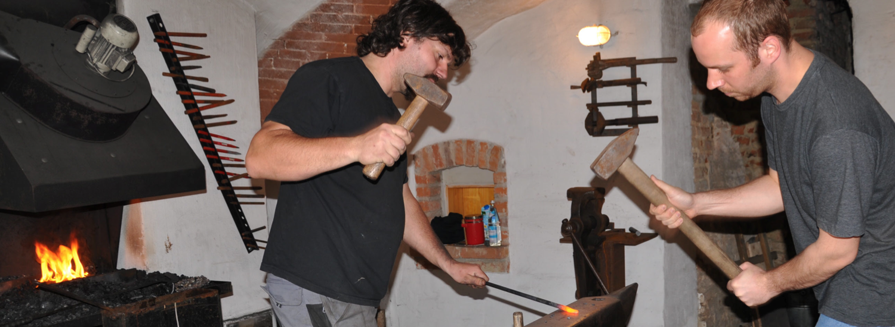
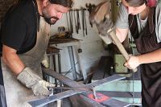

---
layout: shell
title: Presse
---				
		<!-- Main Wrapper -->
			<div id="main-wrapper">

				<!-- Wide Content -->
					<section id="content" class="container">
						<header>
							<h2>Presse</h2>
						</header>
						<a href="#" class="image image-full"></a>
                        
                        <h3>Der Harte und der Zarte</h3>
                        
						<p>Vor lauter flüchtigen Worten sucht PNP-Autor Axel Weidemann nach etwas Bestand - beim Schmieden findet er ihn.</p>
                        <a href="files/hart_und_zart.pdf" class="button button-alt">Zum Artikel</a>
                        
                        <br clear="all">

                        <h3>Eiserne Rosen für Oslo</h3>
                        
						<p>Die Kunstschmiede Johannes Pilz beteiligt sich an einer Gedenkskulptur in Norwegen, die an die Opfer des schrecklichen Attentats vom 22. Juli 2011 erinnern soll.</p>
                        <a href="images/presse_rosen.jpg" class="button button-alt">Zum Artikel</a>
                        
                        <br clear="all">
                            
						<h3>Johannes Pilz lässt altes Handwerk aufleben</h3>
                        
						<p>Kunsthandwerk und Modernes verschmelzen miteinander.</p>
                        <a href="presse_altes_handwerk.html" class="button button-alt">Zum Artikel</a>

					</section>
				<!-- /Wide Content -->
			</div>
